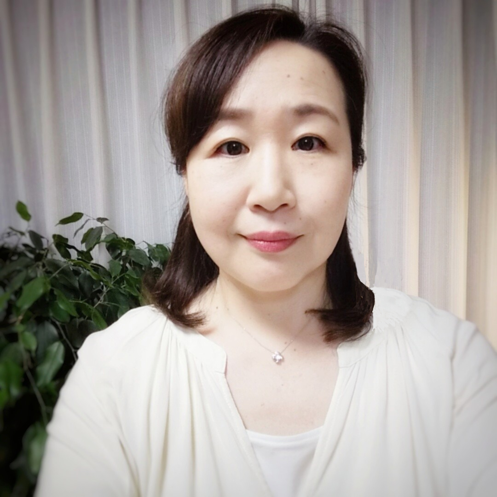

こんなお悩みはありませんか
- 起業・副業に向けて発信を始めたけれど、この方向で合っているのか不安。
- ブログを書いているのに反応が少なく、だんだん更新が苦しくなってきた。
- 経験や資格を活かして、仕事につながる発信にしたい。
- 売り込まずに、「この人にお願いしたい」と自然に選ばれるようになりたい。
- 自分の強みや魅力をうまく言葉にできず、発信の軸がぼんやりしている気がする。
ひとつでも当てはまる方は、まだ何もないのではなく、今ある魅力や価値が少し整理しきれていないだけかもしれません。
発信がうまくいかない理由
発信が続かない。何を書けばいいか分からない。読まれても、仕事にはつながりにくい。
その理由は、書き方のテクニックだけではなく、強み・魅力・価値・コンセプト・自分軸が、まだうまくつながっていないことにあります。
でも、あなたの中にはすでに発信の材料があります。これまでの経験、資格、好きなこと、乗り越えてきたこと。それらは、あなたらしい発信や仕事につながる大切な資産です。
このご相談で、一緒に整理していくこと
1. 強み・魅力・価値の棚卸し
あなたが当たり前にしてきたこと、経験してきたこと、得意なことの中から、発信に活かせる強みや魅力を整理していきます。
2. 発信の軸と全体像の整理
誰に向けて、どんな価値を届けたいのか。ブログや発信全体をどう整えていくのか。自分メディアの軸と全体像を見えやすくしていきます。
3. 伝わる見せ方の方向性確認
言葉のトーン、プロフィールの見せ方、写真や世界観の整え方など、あなたらしさが自然に伝わる方向性を一緒に確認します。
ご相談のあとに見えやすくなること
- 自分の強みや魅力を、前よりも言葉にしやすくなる。
- 誰に向けて発信するのかがはっきりし、テーマ選びに迷いにくくなる。
- 無理に売り込まなくても、あなたらしさや世界観が伝わる発信の土台ができていく。
- ブログやプロフィール、サービス紹介に何を反映したらよいかが見えやすくなる。
すぐに劇的な変化を約束するものではありませんが、「何から始めればいいのか」「自分は何を打ち出せばいいのか」が分かるだけでも、次の一歩はずっと進みやすくなります。
女性のための自分メディア相談に申し込むお客様の声
これまでの講座や発信サポートを受けてくださった方のご感想です。
自分に合わせたアドバイスを、ここまで具体的にしてくれる人はなかなかいないと感じました。方向性や見せ方を一緒に整理してもらえて、とても心強かったです。
講座や相談を通して、一人ひとりに合わせて考えることの大切さを実感しました。その人に合う形を一緒に考えてくれるところが印象的でした。
これまでの経験をあらためて整理できたことで、自分への自信につながりました。第三者の視点で、自分の強みや魅力を見てもらえたことが大きかったです。今後はブログのプロフィールやホームページにも活かしていきたいと思っています。

プロフィール
桜川めぐみ
ミニメディア編集記者＆ライティングフォト講師。
4年制大学経営学部卒業後、流通業界を経て、新聞社系列の編集取材記者として12年間勤務。約3,500件超の取材を通して、人の思いやストーリーを言葉にする仕事に携わってきました。
記事や広告制作の経験を活かし、現在はブログやメルマガなどの発信に、ライティング×写真の視点を取り入れながら、発信を始めたい女性から、今のブログをビジネスブログとして作り替えたい方・テコ入れしたい方まで、自分らしい自分メディアづくりをサポートしています。
ご相談概要
サービス名
女性のための自分メディア相談（女性限定）
内容
Zoomで行う、1対1のオンライン個別相談です。あなたの強み・魅力・経験を整理しながら、発信の軸と自分メディアの全体像を一緒に見ていきます。
時間
約90分
料金
無料メール講座ご登録者様限定価格 5,500円（税込）
日程
お申し込み後、メールにてご相談のうえ決定いたします。
お支払い
事前のお振込みをお願いいたします。
お申し込み案内
「私にもできるかな」
「今の状態でも相談していいのかな」
そんなふうに思われた方こそ、安心してお話しにいらしてください。
無理な売り込みはいたしませんので、まずは今のお悩みや状況を、そのまま聞かせてくださいね。
女性のための自分メディア相談に申し込む